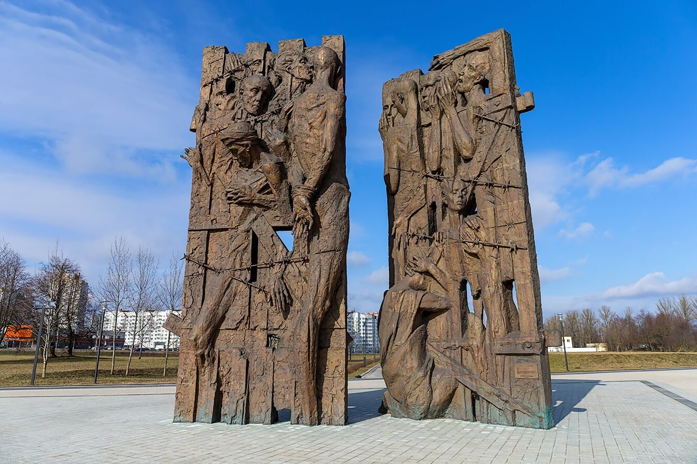
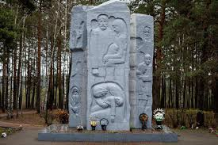

Описание лагерей смерти
Лагеря смерти — это лагеря, созданные исключительно для того, чтобы убивать людей. Они были частью нацистского плана по окончательному решению еврейского вопроса и уничтожению других групп, которые нацисты считали нежелательными.
К крупнейшим лагерям смерти относились: Освенцим, Треблинка, Собибор и Белжец. В этих лагерях миллионы людей были уничтожены газом, застрелены или погибли от голода и болезней.

Освенцим
Освенцим (Аушвиц) был крупнейшим лагерем смерти и символом Холокоста. В этом лагере было убито более миллиона человек, большинство из которых были евреи. Людей массово отправляли в газовые камеры, а затем их тела сжигались в крематориях. В этом лагере были созданы все условия для массовых убийств.

Треблинка
Треблинка была ещё одним значительным лагерем смерти, где за короткий срок были уничтожены сотни тысяч людей. Здесь не было трудового лагеря или других функций — главной целью было массовое убийство.

Собибор
Собибор был известен не только массовыми убийствами, но и восстанием заключённых, которые сумели сбежать, хотя многие из них позже были пойманы. Этот лагерь стал символом сопротивления нацистскому режиму.

Лагерь Колдычёво
Лагерь Колдычёво был создан нацистами в 1942 году на территории Беларуси. В этом лагере находились евреи, партизаны и советские военнопленные. За время его существования было уничтожено около 22 тысяч человек. Заключённых расстреливали, отправляли в газовые камеры или подвергали ужасным условиям содержания, приводившим к их гибели.

Тростенец
Тростенец стал крупнейшим на территории Беларуси местом массового уничтожения людей в годы Великой Отечественной войны. По количеству жертв он занимает четвёртое место после таких печально известных нацистских лагерей смерти, как Освенцим, Майданек и Треблинка. Здесь гибли советские военнопленные, евреи Беларуси и западноевропейских государств, подпольщики и партизаны, жители Минска, арестованные в качестве заложников. По официальным данным, здесь погибло 206,5 тысячи человек. Порой озвучивается и другая цифра — 546 тысяч.
Свидетели показали, что жертвами расстрелов были как мирные советские граждане, так и иностранные евреи, которых привозили в Минск специальным транспортом. Название «Тростенец» объединяет несколько мест массового уничтожения людей: урочище Благовщина — место массовых расстрелов; лагерь — рядом с деревней Малый Тростенец в 10 км от Минска по Могилёвскому шоссе; урочище Шашковка — место массового сожжения людей.
Согласно официальным данным, всего в лагере смерти Тростенец погибли 206,5 тысячи человек. Однако в 1994 году исследователь Александра Георгиевна Ванькевич обнародовала другие цифры — в Тростенце погибли 546 тысяч человек. Она опирается на документы Чрезвычайной государственной комиссии и Минской областной комиссии содействия работе ЧГК от 14 июля — 13 августа 1944 года, где засвидетельствовано: «Комиссия, учитывая показания свидетелей, количество и размеры могил, количество трупов и объём пепла и костей в могилах, считает, что по самым минимальным подсчётам в районе лагеря Тростенец фашистскими людоедами уничтожено 546 тыс. человек, из них в 34 могилах захоронены останки (пепел и кости) 476 тыс. человек, в печи сожжено 68 тыс. человек и в сараях, и на брёвнах сожжено 2 тыс. человек».
Лагерь смерти Озаричи
Лагерь смерти Озаричи стал местом массового уничтожения людей на территории Беларуси во время Великой Отечественной войны. Средняя продолжительность жизни людей в лагере составляла всего 3 суток. В нечеловеческих условиях, лишённых еды и воды, погибло около 17 000 человек.
Из 33 480 освобождённых из лагеря, 15 960 человек составляли дети до 13 лет, 517 из них остались сиротами. Этот лагерь стал символом жестокости фашистского режима и бесчеловечного обращения с мирными жителями.
Цитата Президента Республики Беларусь Александра Лукашенко:
Я обращаюсь ко всем, кто убеждён, что фашизм «нёс на нашу землю цивилизацию»; кто героизирует убийц. Мы занялись этой проблемой, и мы докажем и покажем всему миру, что такое геноцид, и что те, кто сегодня нас пытается поучать, как жить, как минимум не имеют на это права. Всем вам, заблудшим и одурманенным, говорю: «Иди и смотри!» Иди в Хатынь, Борки, Олу, Дальву, Усакино, Шуневку, Озаричи, к мемориалам «Тростенец», «Яма», «Красный Берег».
QR-код для задания
Отсканируйте QR-код для выполнения задания по теме "Лагеря смерти":